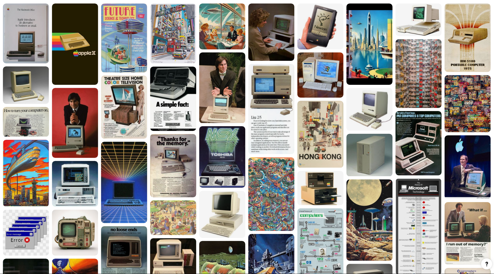
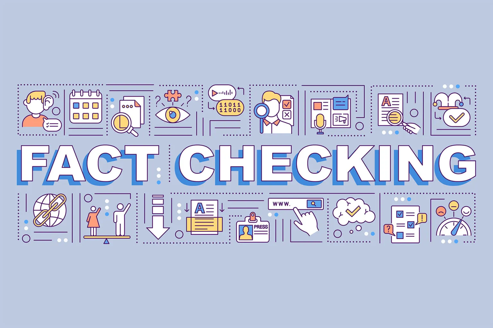
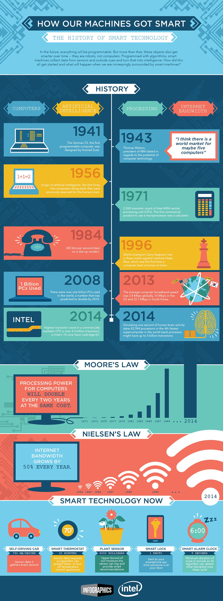
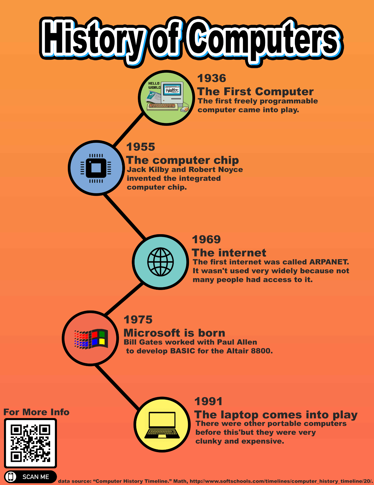
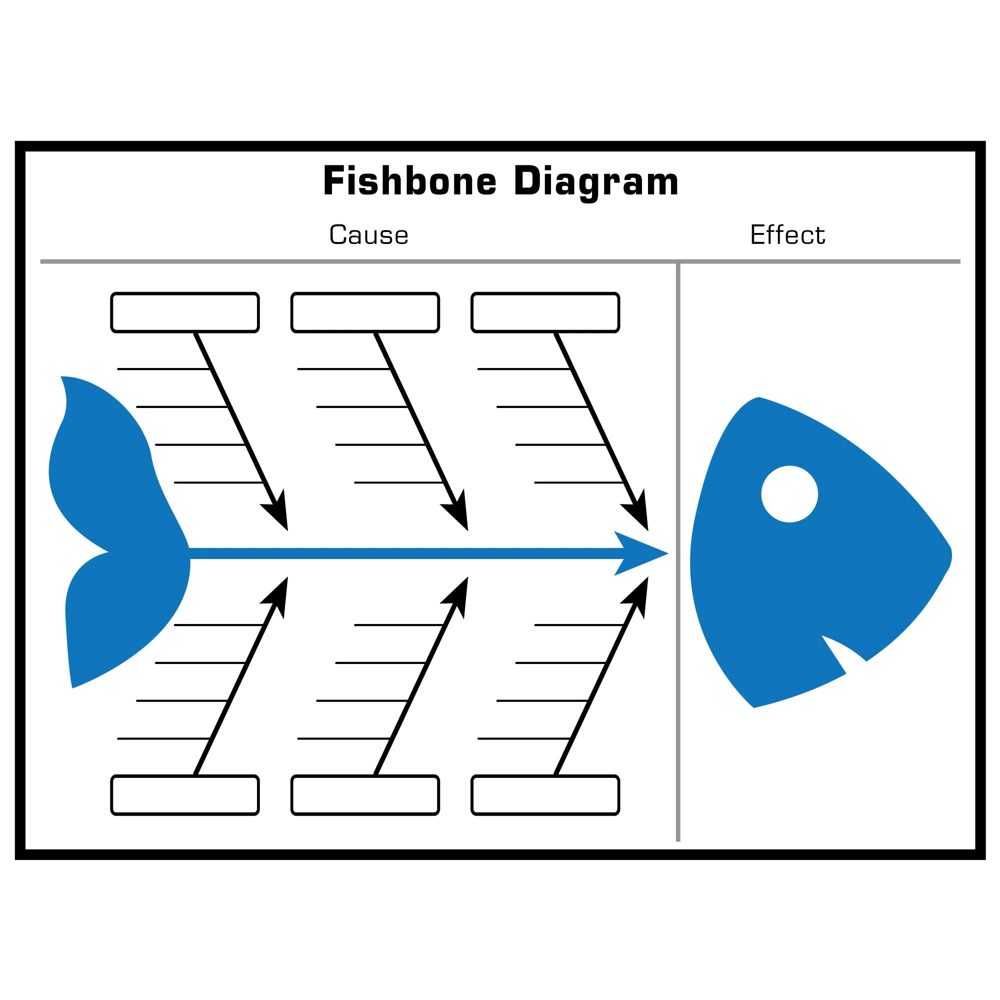
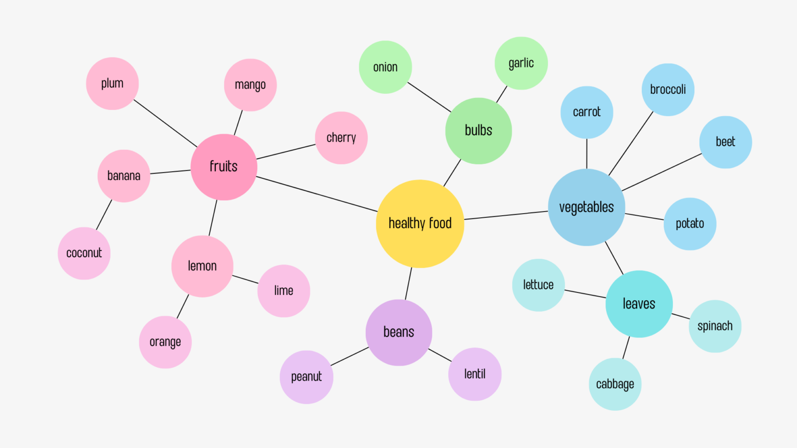

Урок 2
Создаём крутую презентацию в PowerPoint
Привет! На прошлом уроке мы начали работать над презентацией и создали mood board — это такая
"доска настроения", которая помогает визуализировать идеи. Сегодня мы продолжим и разберём, как превратить
наши задумки в готовую презентацию. Поехали!
Mood board помогает понять, как будет выглядеть твоя презентация.
- Что он нам даёт?
- Помогает выбрать стиль (цвета, шрифты, картинки).
- Упрощает работу: ты уже знаешь, какие изображения и идеи использовать.
- Делает презентацию более цельной и профессиональной.

Mood board также помогает собрать информацию и факты для презентации. Пример - в конце этой
страницы.
Следующий шаг - проверка фактов.
Прежде чем добавлять факты в презентацию, нужно их проверить.
- Что такое fact checking?
- Это проверка информации на достоверность.
- Зачем это нужно?
- Чтобы не допустить ошибок и не ввести аудиторию в заблуждение.
- Как проверять?
- Используй авторитетные источники: книги, научные статьи, официальные сайты.
- Сравни информацию из нескольких источников.

Переходим к следующему шагу!
Структура презентации
Структура — это как план для твоей презентации. Она делает её понятной для слушателя и помогает тебе не запутаться.
Основные части презентации
-
Введение:
- Расскажи, о чём будет презентация.
- Заинтересуй аудиторию (например, интересным фактом или вопросом).
-
3 изобретения:
- Можно использовать одну и ту же структуру, чтобы рассказать про каждое изборетение (компьютеры, интернет,
мобильные телефоны). Это облегчает понимание слушателем. Примеры подтем:
- Заголовок: Например, "История компьютеров".
- Краткое описание: Основная информация.
- Место и время: Где и когда появилось изобретение.
- Авторы, ключевые люди и компании: Кто придумал или развил технологию.
- Влияние: Как изобретение изменило мир.
- Поразительные факты: Что-то удивительное или необычное.
-
Заключение:
- Подведи итог: что общего у этих изобретений?
- Свяжи это с интересами аудитории (например, как эти технологии влияют на нашу жизнь).
- Заверши интересным выводом или вопросом.
Способы представления информации
Чтобы презентация была интересней, можно использовать разные форматы:
1. Инфографика
- Это визуальное представление информации с помощью графиков, иконок и коротких текстов.
- Помогает быстро понять сложную информацию.
- Например: диаграмма, показывающая, как изменилась мощность компьютеров за 50 лет.
Пример:

2. Timeline (Временная шкала)
- Показывает события в хронологическом порядке.
- Помогает понять ход событий в течение времени.
- Пример: Шкала с ключевыми датами в истории компьютеров и интернета.

3. Fishbone Diagram (Диаграмма Исикавы)
- К основной линии примыкают боковые, что делают диаграмму похожей на скелет рыбы.
- боковые линии представляют различные факторы, которые ведут к основной проблеме или событию.
- Помогает анализировать причины и находить решения.
- Пример: Почему мой компьютер тормозит?

4. Mind Map (Интеллект-карта)
- Показывает структуру информации в виде дерева или карты.
- Помогает организовать идеи вокруг центральной темы.
- Пример: Mind Map для презентации о компьютерах.

Алгоритм работы над презентацией в PowerPoint
Теперь, когда у нас есть структура и идеи, приступим к созданию презентации.
1. Выбираем стиль презентации
Стиль должен соответствовать теме и аудитории. Настраиваем стиль на закладке Дизайн.
- Theme (Тема): Выбери готовый дизайн или создай свой.
- Background (Фон): Может быть однотонным, градиентным или с изображением.
- Color Scheme / Palette (Цветовая гамма): Используй 2-3 основных цвета.
- Fonts (Шрифты): Выбери читаемые шрифты (например, Arial или Calibri).
2. Добавляем слайды
- Композиция слайда (Layout): Выбери макет (например, "Заголовок и текст"). Кнопка
Макет на закладке Главная.
- Изображения (Images): Добавь картинки из mood board.
- Текст (Text): Будь краток и понятен.
- Графика (Graphics, Shapes): Используй фигуры для выделения информации.
- Диаграммы (Charts, Diagrams, Graphs): Для визуализации данных.
- Таблицы (Tables): Для сравнения или структурирования информации.
- Видео (Video): Если нужно показать что-то в действии.
- Звуки (Audio): Например, для фоновой музыки.
3. Добавляем переходы между слайдами
(Transitions)
- Переходы делают презентацию плавной, привлекают внимание слушателей.
- Как добавить:
- Перейди на вкладку "Переходы".
- Выбери понравившийся эффект (например, "Затемнение").
4. Добавляем анимации (Animations)
- Анимации оживляют слайды.
- Как добавить:
- Выдели объект (текст или изображение).
- Перейди на вкладку "Анимации".
- Выбери эффект (например, "Появление").
Термины и понятия
- Canvas: Рабочая область слайда или программы для работы с графикой.
- Background: Фон слайда.
- Merge Shapes: Объединение фигур для создания новых форм.
- Gradient: Плавный переход между цветами.
- Transparency: Прозрачность. Используется для создания эффектов.
Домашнее задание
Продолжай работать над презентацией:
- Добавь слайды с информацией о компьютерах, интернете и мобильных телефонах.
- Используй инфографику, timeline или другие форматы для визуализации.
- Поэкспериментируй с переходами и анимациями.
Пример: таблица
ключевых событий в истории компьютерных технологий
| Заголовок |
Краткое описание |
Дата |
Место |
Человек/Компания |
Категория |
| Аналитическая машина Бэббиджа |
Первая концепция программируемого компьютера. |
1837 |
Великобритания |
Чарльз Бэббидж |
Компьютер |
| Телеграф |
Первая система передачи данных на расстоянии. |
1837 |
США |
Сэмюэл Морзе |
Интернет (предшественник) |
| Телефон |
Первое устройство для передачи голоса на расстоянии. |
1876 |
США |
Александр Грэм Белл |
Мобильный телефон (предшественник) |
| ENIAC |
Первый электронный компьютер общего назначения. |
1945 |
США |
Джон Преспер Эккерт и Джон Мокли |
Компьютер |
| ARPANET |
Первая сеть, которая легла в основу интернета. |
1969 |
США |
Министерство обороны США (DARPA) |
Интернет |
| Первый мобильный звонок |
Первый звонок с портативного мобильного телефона. |
1973 |
США |
Мартин Купер (Motorola) |
Мобильный телефон |
| Первый ПК (Apple II) |
Первый массовый персональный компьютер. |
1977 |
США |
Стив Возняк и Стив Джобс (Apple) |
Компьютер |
| Motorola DynaTAC |
Первый коммерческий мобильный телефон. |
1983 |
США |
Motorola |
Мобильный телефон |
| WWW (Всемирная паутина) |
Изобретение World Wide Web, сделавшее интернет доступным для всех. |
1989 |
Швейцария |
Тим Бернерс-Ли |
Интернет |
| Первый смартфон (IBM Simon) |
Первый смартфон с сенсорным экраном. |
1994 |
США |
IBM |
Мобильный телефон |
| Google |
Основание компании, которая изменила интернет-поиск. |
1998 |
США |
Ларри Пейдж и Сергей Брин |
Интернет |
| iPhone |
Первый iPhone, революционизировавший мобильные телефоны. |
2007 |
США |
Стив Джобс (Apple) |
Мобильный телефон |
| 5G |
Запуск сетей пятого поколения для мобильной связи. |
2019 |
Мир |
Разные компании (Huawei, Qualcomm) |
Мобильный телефон |
| Квантовые компьютеры |
Первые коммерческие квантовые компьютеры. |
2020-е |
США, Канада |
IBM, Google, D-Wave |
Компьютер |
Теперь у тебя есть всё, чтобы создать крутую презентацию! Удачи, и не забывай: главное — это твои идеи и творческий
подход. 🚀